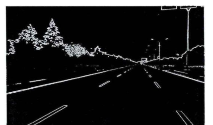
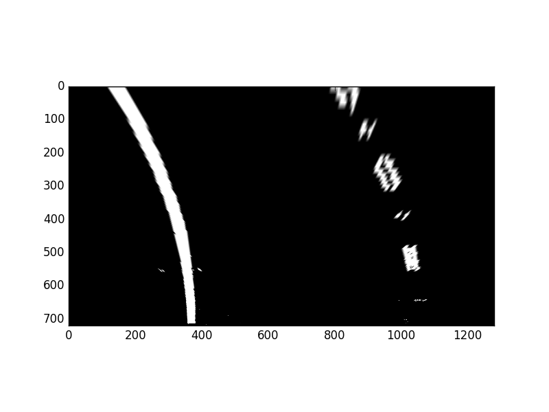
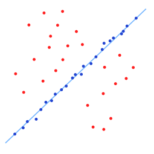
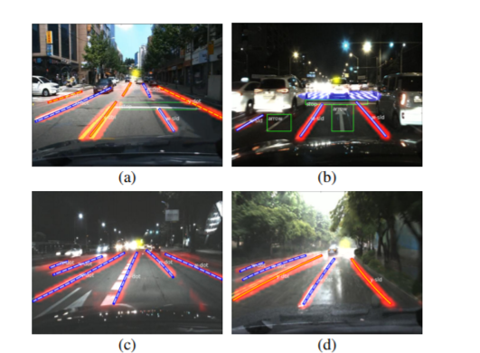
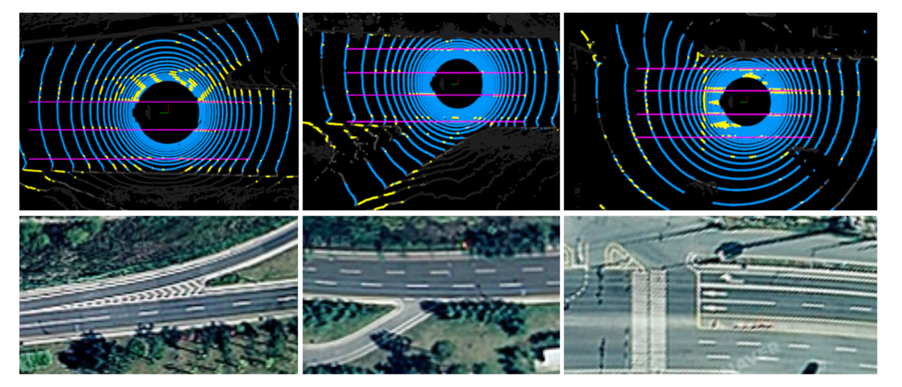

Lane Detection
利用边缘检测和霍夫直线检测*
笔者做RTOS小车视觉使用的方法。简要来说，就是经过预处理、边缘检测后，转换成霍夫空间然后检测直线。这种方法假设很明显：道路是直的，边缘检测之前的预处理十分重要处理后的道路和周围有明显的梯度。
霍夫直线检测有两种，但是原理相同。基本想法就是：
- 经过平面中的一点
的直线必定满足
- 为避免垂直线将其转化成极坐标
，贡献的两个点
在
平面中是共点的，计算共点累加数(比如累加数组
，调整
和
)，大于阈值(voting)的可能就是直线。
边缘检测可以利用Canny、Sobel、Gabor滤波等或者其他一堆变种，Canny比较常用，Canny误识别噪声的风险中等（这个取决于用在什么环境下，本身复杂纹理很多边缘检测算法效果都不好），其算法一般流程是：
- 高斯模糊
- 计算梯度（经典Canny算法用了四个梯度算子来分别计算水平，垂直和对角线方向的梯度）
- 非最大值抑制（边缘细化，因为计算出来的像素宽不止一个）
- 双阀值（保留大梯度）

使用Canny和霍夫的道路检测也有很多做法，几种可能尽量全的流程：
选取ROI，BGR转灰度图，简单二值化，canny检测边缘，霍夫直线检测
选取ROI，BGR转灰度图，自适应二值化（方阵区域里面取mean，主要是减少光照影响），腐蚀膨胀，canny边缘检测，霍夫直线检测
选取ROI，BGR转HSV取出道路颜色块和原图进行与操作（假设道路颜色单一并且明显），转成Mat后canny边缘检测，霍夫直线检测
……
在选取ROI之后还可以进行透视变换变成鸟瞰图，再进行之后的操作，这个取决于道路具体情况
除了笔者的写的简单方法，还有仓库也有相应的代码

拟合*
多项式或者其他函数应用在几何模型上，也就是说能够采样到两条或多条线上的点集，通过最小二乘法等拟合曲线，曲线模型得提前确定。这里面基本上的论文创新点（( ﹁ ﹁ ) ~→灌水点）在曲线和采样方式。当然采样还可以在三维模型上，这里指是RGB二值化处理后的采样。
拟合之前，需要用一些预处理方式得到纯净的道路图像，比如（图来自github）

一般的预处理流程是取ROI，叠加颜色和边缘信息，透视变换，滤波…… 其实目的都是为了能够得到单纯的道路线或者点集，从而避免采样的时候受到其他干扰。使用采样的时候，最好把不同的道路分开
可能的在二值图像上的采样方式有：
（高斯）滤波
高斯滤波器是一种线性滤波器，能够有效的抑制噪声，平滑图像。其作用原理和均值滤波器类似，都是取滤波器窗口内的像素的均值作为输出。可以认为车道线实际上点很少，而包裹着他周围的都是噪声点，也就是把车道线变瘦，之后在少量的点上面进行拟合。（这个对车道线在图像上的要求非常严格，高斯滤波只是一个例子，还有其他的去噪方法比如卷积等）
滑动窗口
基本思想是对二值图像在x方向做直方图统计，从峰值左右开始搜索，然后对x，y方向做直方图统计，过滤掉多零值的框，对剩下的框对非零值求中心，并对这些中心点做拟合。

在Udacity上面有利用滑动窗口做出的项目，也有对应的github项目
RANSAC（这个方法其实既有采样又有拟合，同样的拟合函数、投票函数、阈值都要自己确定）
RANSAC基本想法就是一个数据集包含局外点，他们不能属于模型的一部分，这个方法通过反复的随机选择数据集的子空间来产生一个模型估计，使用数据集剩余的点进行投票，最终返回一个投票最高的模型估计作为整个数据集的模型。

经典的拟合曲线：二项式曲线、Bezier曲线、双曲线 等，拟合方法一般用最小二乘法，拟合之前还可以对采样后的点进行聚类(一般使用DBSCAN或者GMM+EM，这里不要用K-Mean，同一类别的线点不是围绕质心点均匀分布的)，分出不同类型的线。
灭点
提及灭点主要是下某篇博文可能会介绍 VPGNet[1] 。灭点指两条或多条代表平行线线条向远处地平线伸展直至聚合到的一点，他对三维重建十分有意义，而对于直线道路，灭点可以减少干扰的直线，从而对道路有一个比较好的检测，也就是说实际上灭点并不是一个道路检测方法，最重要的是利用它找到可能为道路的线，当然这里的线主要就是直线。（下图来自VPGNet）

灭点在道路检测的主要问题在灭点检测上，这其实是一个很大的话题，方法也有很多种，不过很多方法实质上是聚类算法，在github上有个项目正好讲到如何构建灭点。
一般的灭点检测算法有：
- 通过霍夫变换来进行灭点的检测，对于每一个可能的直线对，这对直线交点的方向能够被计算出来，并且他们的角度能够积累到一个参量中。通过选择包含最高数量词目的参量来获得占据主导的灭点。然而，这种方法对于角度参量量化的水平十分的敏感，可能导致多重的检测。除此之外，由于灭点是各自独立检测，所以这种方法并不能够直接在灭点上强加正交性的约束。高斯球灭点检测算法的思想与该算法类似，即把图像中的直线映射到高斯球上，在高斯球上划分累加单元，求取交点数目最多的累加单元对应的球坐标，再映射到原图像中即为灭点的位置。
- 通过RANSAC（以及他的拓展）的方法对灭点进行检测。具体的过程是：随机的选择两条直线来创建一个假设的灭点，之后再计算通过这个假设灭点的直线的数量。经过一定数量的迭代之后，返回值是一个能够最大化相交直线数量的灭点
LIDAR
激光生成的点云也可以用在标志的检测上，LiDAR在道路检测中最主要是用在轿车和行人的识别上，检测道路时候可能还需要配合GPS map等其他信息构建Drivable Region。点云信息除了三维深度信息以外可以获得颜色信息、反射强度、点云密度等。点云处理这一块内容涉及非常广，包括预处理与关键点识别与特征值分析、三维或深度匹配、分割与语义分类、SLAM……
在道路预测上可能单纯利用LiDAR的做法有：
- 通过密度(反射强度)和slope changes来寻找路面[2]（相当于提取ROI）
- 与高精度地图配合构建Drivable Region[3]

结合其他非DL/ML方法的不多见，结合DL的就很多了，日后博文会讲到。
Road Detection
这里只是讲一下可能会用到的特征或者数据，另外Road Detection 和 Drivable Region本人觉得差距还是挺大的，Drivable Region 应该多有深度信息，地图信息等，而不是单纯的道路语义分割或者实例分割。
颜色
一个很简单的方法是颜色提取。对于结构化的路面，颜色特征是非常明显的，结构化的沥青路面，颜色集中均匀，一般来说可以利用BGR转HSV作用上道路的颜色域，之后提取出道路。传统的路面颜色提取的方法还有高斯混合模型，分离出背景路面与前景物体。除此之外根据颜色特征来提取路面的基本区域时，光照不变性方法使用的最为广泛。（下图来自[4]，不过不是用这个方法，现在的DNN提取特征远多于颜色这一个单项）
边缘*
即首先提取道路边缘，道路边缘夹紧的便是路面。见道路识别
灭点
见道路识别，灭点约束的直线域的下片便是路面
LIDAR
见道路识别
Reference
[1] Seokju Lee. VPGNet: Vanishing Point Guided Network for Lane and Road Marking Detection and Recognition
[2] Yu-Fang Wang and Yi-Shueh Tsai.A lane detection method based on 3D-LiDAR
[3] Jiyoung Jung ID and Sung-Ho Bae. Real-Time Road Lane Detection in Urban Areas Using LiDAR Data
[4] Road Detection Based on Illuminant Invariance